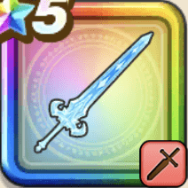

魔力の宝剣
攻略班 8.5点 / ブレードガード魔族連携・雷爪魔族連携・邪風つうこん撃魔族連携・じごくの魔氷会心ラッシュ必中の極意
くわしい特徴
【レベル別習得スキル】 Lv1攻撃力+5 Lv3さいだいHP+10 Lv10ブレードガード（消費MP：7）自身のガード率を1段階上げる Lv15魔族連携・雷爪（消費MP：37）敵全体に威力330%のデイン属性斬撃ダメージを与える Lv20魔族連携・邪風つうこん撃（消費MP：50）敵1体に攻・魔複合の威力415%のバギ属性斬撃ダメージを与え、たまに敵の状態変化(一部を除く)を1つ解除。会心ラッシュLv最大で解除確率上昇 Lv30魔族連携・じごくの魔氷（消費MP：50）敵1体に威力710%のヒャド属性斬撃ダメージを与え、たまに敵の状態変化(一部を除く)を1つ解除。会心ラッシュLv最大で解除確率上昇 Lv35悪魔系へのダメージ+5% Lv40スライム系へのダメージ+5% Lv45攻撃力+12 Lv50会心ラッシュ（消費MP：20）戦闘開始時に6ターンの間、自身に会心ラッシュを付与。攻撃スキル使用後に四天王による会心の一撃が確率で発生。敵味方の戦闘行動により効果Lvが上がり、威力・回数・発生確率が上昇 Lv50必中の極意（消費MP：8）戦闘開始時に自身に斬撃・体技ダメージがガードやみかわしされなくなる効果を付与する(効果4ターン) 【限界突破スキル】 1凸スキルの斬撃・体技ダメージ+7% 2凸スキルの斬撃・体技ダメージ+7% 3凸スキルの斬撃・体技ダメージ+7% 4凸スキルの斬撃・体技ダメージ+7%